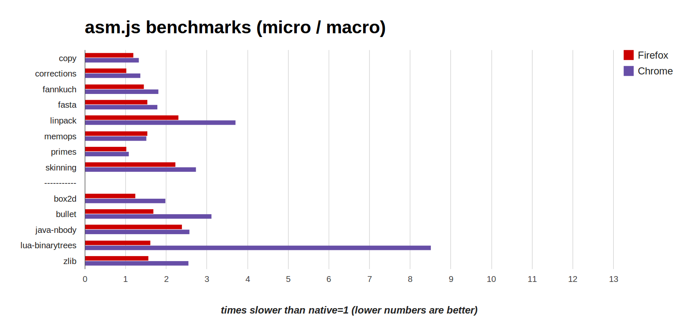
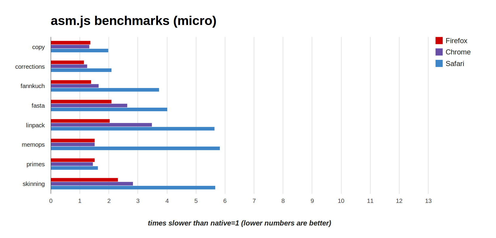
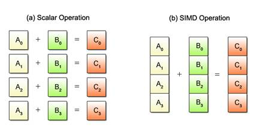

Native Speed
on the Web
JavaScript and asm.js
Alon Zakai
The Web

Biggest open and standards-based platform
Great way to reach users
Would be great if it were fast as well ;)

How fast is it?

Speed on the Web
Speed is determined by many things
DOM, graphics, JavaScript
This talk is about JavaScript
How fast is JavaScript?
The Epic Citadel demo is one way to measure
Over 1 million lines of C++ compiled to JavaScript using Emscripten
OpenGL renderer, compiled to use WebGL
Uses only standard web technologies
Epic Citadel: Progress
Launched March 2013, browsers improved since
| back then | today | |
|---|---|---|
only ran in Firefox | runs in Firefox & Chrome | |
20 second startup | 10 second startup | |
40fps | 60fps in Firefox & Chrome |
JS engines don't always run at full speed
Motivated asm.js, an easy to optimize subset of JS
function asmCode(global, env, buffer) {
'use asm';
var HEAP = new global.Uint8Array(buffer);
function fib_like(x) {
x = x|0;
if ((x >>> 0) < 2) return HEAP[x]|0;
return ((fib_like((x-2)|0)|0) + (fib_like((x-1)|0)|0))|0;
}
return fib_like;
}HEAP cannot be replaced
|0 trick ensures 32-bit ints
Typed arrays
asm.js Performance
{kind=link}
Emscripten benchmark suite (VMs and Emscripten from Sep 13 2013, run on 64-bit ubuntu 12.04)
Box2D results

source: @jgw, Box2D Addendum; axis is time slower than native, lower is better
| Box2dWeb - | Port of Box2D using "typical" JS | |
| asm.js - | Port of Box2D using asm.js |
asm.js is faster than "typical" JavaScript on Internet Explorer, Chrome and Firefox
asm.js - Background
Began as a research project at Mozilla
Every compiler (CoffeeScript, Google Web Toolkit, etc.) generates a particular pattern of JS
Emscripten and Mandreel converged on a pattern for compiled C++ in JS
asm.js is a formal definition of that pattern, with some improvements
Ok, near-native speed on Firefox and Chrome...
...but some of us use Safari or IE?
Safari
All browsers optimize JS, but decide which aspects to focus on at which times
{kind=link}
source: arewefastyet.com; x axis is time, y axis is milliseconds (lower is better)
Safari
{kind=link}
Very close on some, farther on others
Not standing still: Experimenting with using LLVM as a JIT
Internet Explorer
IE11, currently in pre-release, looks promising - I've seen it beat other browsers on some JS tests
Supports WebGL!
So safe to assume typed arrays will be fast, which means asm.js will be fast
Big Picture
JS can run at about half the speed of native code
Why just half - what are the remaining issues?
1. 32-bit Floats
JavaScript numbers are 64-bit doubles
Often take more CPU cycles to compute
Require more memory bandwidth
Preliminary tests on Firefox show 10-20% speed difference on relevant code
32-bit Floats
Sometimes possible to do 32-bit math as an optimization
var floats = new Float32Array(calc());
floats[0] = floats[1] + floats[2];
floats[1] = floats[0] + floats[2];
floats[2] = floats[1] + floats[2];
Mathematically provable that those additions can be 32-bit
No reason JS engines cannot do this right now (and Firefox is working on it)
32-bit Floats
A "fragile" optimization though
var floats = new Float32Array(calc());
floats[0] = floats[1] + floats[2] + 1; // can't
floats[1] = floats[0] + floats[2] + 1; // be
floats[2] = floats[1] + floats[2] + 1; // optimized
But ES6 (proposal for the next version of JS) includes Math.fround, which rounds to 32-bit precision
var floats = new Float32Array(calc());
floats[0] = Math.fround(floats[1] + floats[2]) + 1;
floats[1] = Math.fround(floats[0] + floats[2]) + 1;
floats[2] = Math.fround(floats[1] + floats[2]) + 1;
Now it's optimizable!
2. SIMD
Single Instruction, Multiple Data: SSE, NEON, etc.
{kind=link}
Large parts of CPUs dedicated to SIMD
C++ has various ways to support it, and some VMs do as well: Mono, Dart
SIMD
John McCutchan from Google wrote a proposal for SIMD in JS
var x = float32x4(1, 2, 3.14159, 22.5);
var y = float32x4(0, 0, 1, 0);
var z = SIMD.add(x, y);
Immutable 128-bit values, designed for what CPUs provide
Potentially big (e.g. 300% in some cases) speedups on certain types of code
Collaboration is ongoing with Google, Mozilla, Intel and TC39
3. Threads
Web workers allow multiple CPU cores to be utilized
Workers can transfer typed arrays, avoiding copies
But they can't read and write to the same data at once
Good for preventing data races, but bad for some types of projects (for example, modern game engines are heavily multithreaded)
Threads
Various proposals, some experiments, but no clear direction yet
Would require all vendors to agree and standardize something new and complex
Part of the challenge is figuring out how it fits in with the rest of the web, which does not currently have data races at all
Float32, SIMD, and threads are in progress, but already many apps run close to native speed
 |
One final demo before we finish up
BananaBread, a port of the Cube 2/Sauerbraten First Person Shooter (FPS) to JS+WebGL
Running inside it: Boon, another FPS
Demo Tech Details
Boon runs in a web worker
Input events are proxied to it, output of (unoptimized) software renderer is sent back
We push those pixels to a WebGL texture
Less than 100 lines of code to integrate the two
Both games run at once at 60fps on a very average laptop!
Summary
JS is close and getting closer to native speed
Some missing pieces (SIMD, float32, etc.), but progress is happening
That's it! :) Questions?